7. Using MDANSE Graphical User Interface
Through the MDANSE graphical user interface (GUI), you will usually open a trajectory, then specify the parameters for the analysis you wish to perform and finally start the calculation itself. In this interface you can also perform some other actions such as plotting the results of an analysis, performing some file conversions, and view the geometrical structure of your calculations. The GUI gives access to most of the functionalities of MDANSE. Moreover, from the GUI it is possible to create an input file for the command-line interface or an auto-start analysis python script. Both kind of files provide a convenient starting point to set up and run new analysis directly from the command line.
7.1. Opening MDANSE GUI
On all platforms, the GUI can be started either through an icon, or from the command line. Below are outlined the subtleties connected to each platform. In each case, it might take some time before the GUI opens, so please be patient.
7.1.1. Windows
If, during the installation, you selected to create a desktop shortcut, you can use that to start MDANSE. Otherwise, you will have to open the folder where you installed MDANSE (C:\Program Files\MDANSE by default). Inside you can double click on the file called MDANSE with the MDANSE icon:
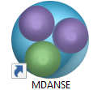
Alternatively, you can double click the file called MDANSE_launcher.bat. If you want to start MDANSE GUI from the command line, you just have to type in the path to this batch file, not forgetting to use “ if there are spaces in the path.
7.1.2. MacOS
If you installed it normally, MDANSE icon should appear in Applications like any other app. However, starting it the first time is a bit more complicated since Apple implements stricter protections and we are not registered as trusted developers. Therefore, you might have to change some settings (see Ref [4] for a guide). Before you do that though, try simply opening MDANSE from the right click menu (see Ref [3] for a guide).
To start MDANSE GUI from terminal, you will have to run the following command (change /Applications if you installed MDANSE elsewhere):
/Applications/MDANSE.app/Contents/MacOS/MDANSE
7.1.3. Linux
If your distribution has an applications menu of some sort, like below, you should be able to find an MDANSE icon in there that can be used to start the GUI.
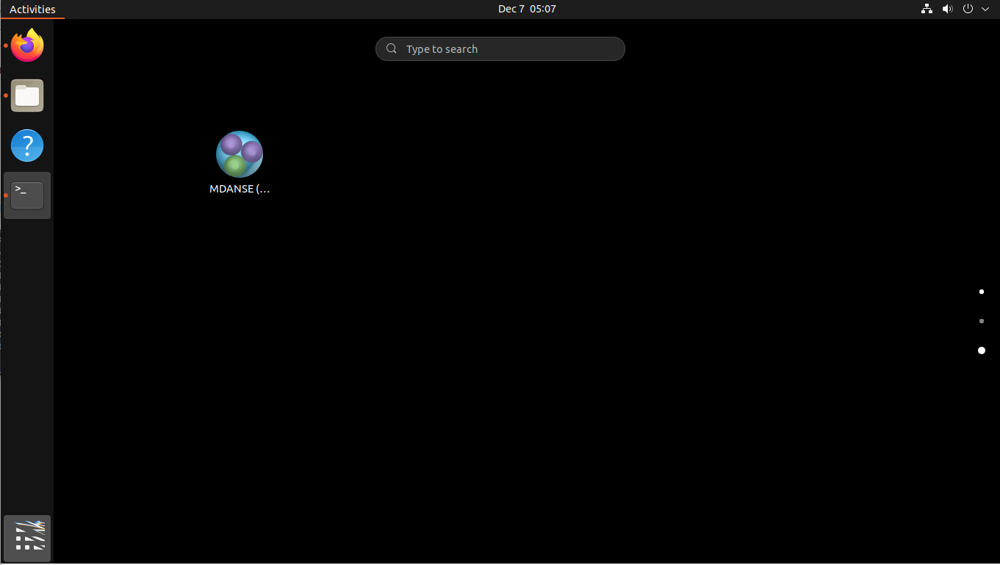Otherwise, you will need to use the terminal. First, try running:
mdanse_gui
If that doesn’t work, you will need to know where MDANSE got installed. By default, it should be in /usr/local, so try looking if the above script is inside /usr/local/bin. If it isn’t there, the best bet is searching for it with find / -name mdanse_gui. Once you know the path (let’s call it mdanse_bin), run the following:
mdanse_bin/mdanse_gui
7.2. The main window
Below is an image of the window you will see when you open MDANSE GUI. All the parts have been marked and their short descriptions can be found below. Further information on all parts is in the following sections.
Please note that all pictures come from Windows 10, so the GUI will look very slightly different on other platforms. However, MDANSE works equally well, bugs notwithstanding, on all platforms.
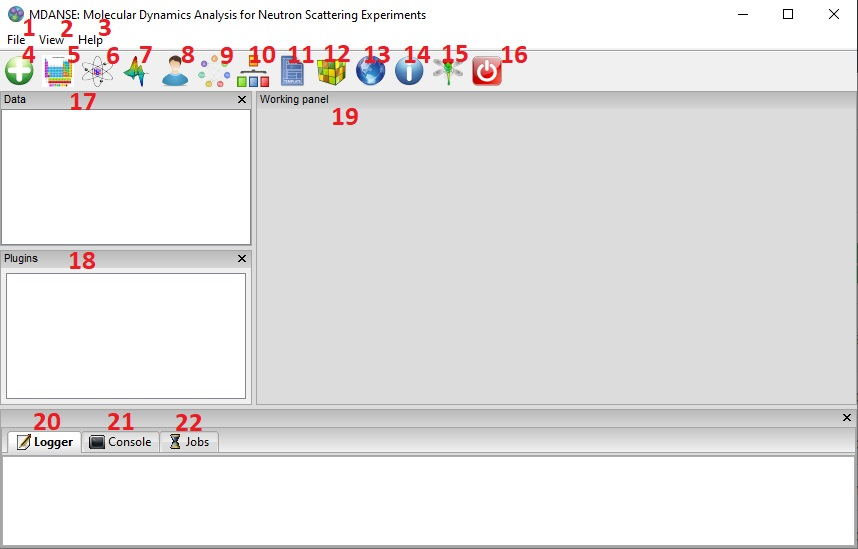File menu handles file manipulation. It can be used to load NetCDF trajectories or to convert other trajectories into the NetCDF format.
View menu allows you to hide/show various parts of MDANSE.
Help menu contains access to files that you can use to better understand MDANSE and the theory behind it.
Load trajectory button can be used to load a NetCDF trajectory.
Periodic table viewer opens a periodic table containing the constants and data that MDANSE uses for calculations.
Elements database editor allows you to change the atomic constants that MDANSE uses for calculations.
2D/3D Plotter launches a window where the calculated data can be plotted, and the plots formatted.
User definitions editor opens a window where you can view the definitions that have been created for each trajectory. More on definitions in Selections.
Units editor opens a window where the units used in MDANSE can be managed.
MDANSE classes framework allows you to peruse the documentation for the classes that make up MDANSE. This is useful if you want to use MDANSE from the command line.
Save analysis template allows you to create a new analysis. This will be available in My jobs inside the Plugins panel and can be run like the native analyses.
Open MDANSE API opens MDANSE documentation in a browser. This is very similar to MDANSE classes framework.
Open MDANSE website opens the MDANSE website[8] in a browser.
About launches a window with very basic information about the MDANSE you have installed.
Bug report opens your default mail application. Please use this or create an issue on MDANSE GitHub[9] to inform us of any issues you have come across.
Quit MDANSE closes the MDANSE window.
Data panel contains any NetCDF files you loaded into MDANSE using either #4 Load trajectory button, or from #1 File menu > Load trajectory.
Plugins panel contains all the options you can do with the selected trajectory.
Working panel shows the trajectories you have opened. To open a trajectory, double click a trajectory in #16 Data panel. You can then inspect the system described by the trajectory.
Logger shows all the messages generated by MDANSE. These can be errors or information messages, such as ones confirming you saved a script etc.
Console is a Python shell. It can be used like normal when python is being used from the command line, i.e.. when python is typed and executed in an OS shell. It contains all the bundled modules, but you will need to import them first.
Jobs shows the status of all current jobs. Once you start an analysis or trajectory conversion, you can view its progress here.
7.3. The File menu
Pressing the File menu button brings up the following menu:

7.3.1. Load data
This option allows you to select an MMTK NetCDF file. Once you click the Load data button, a standard (platform-specific) file browser will open, like the one below:
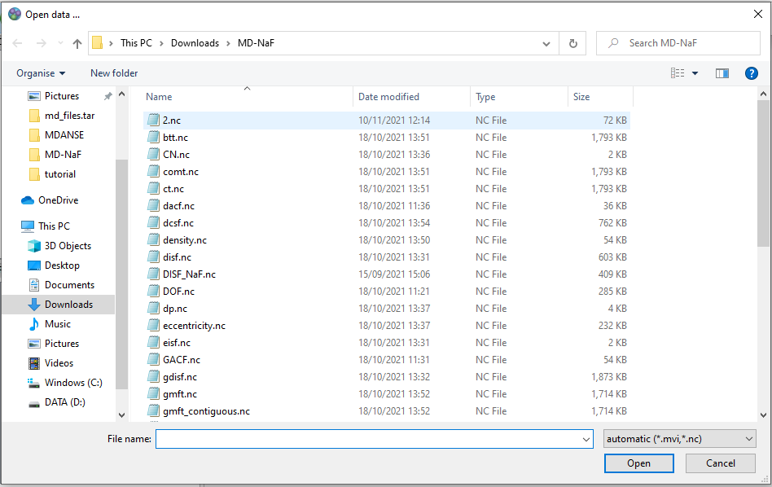Use it as per normal, and the file you selected will appear in the Data panel. While it says in the file browser that you can load mvi trace file format, this is not currently implemented. Please only load NetCDF files that have been generated using MMTK or MMTK-based software. If you have a trajectory from elsewhere, it must be converted first. For more information about converting trajectories, please see the next section.
7.3.2. Trajectory converter
This option allows to convert a trajectory derived with a non MMTK-based program to the NetCDF MMTK trajectory format. Hovering over the Trajectory converter brings up the following menu:

Clicking on any button opens a window of that converter. Each converter contains these three buttons at the bottom:
Help will open MDANSE documentation for the converter class.
Save creates a python script with the values of all the fields set the way they were when the button is clicked. This script can be used to quickly run this conversion again in the future.
Run initiates the conversion. Its progress can be seen in Jobs. After a successful Run, the converted trajectory is saved in the location specified in the field “output files” in the converter interface.
The descriptions of all converters will be found in Appendix 1.
7.3.3. Quit
Selecting this option opens a confirmation prompt. If you select yes, MDANSE will close.
7.4. The View menu
This menu contains several options to hide/show various parts of MDANSE:

Toggle data tree shows/hides the Data panel:
Toggle plugins tree shows/hides the Plugins panel:
Toggle controller shows/hides the bottom bar containing Logger, Console, and Jobs:
Toggle toolbar should show/hide the toolbar:

7.6. Toolbar
This is a set of pictographic buttons that you can use to quickly perform many important actions. Below is a brief overview of all of them, going left to right, and after that we will take a look at the more complex ones.
Load trajectory button can be used to load a NetCDF trajectory. More information in Load data.
Periodic table viewer opens a periodic table containing the constants and data that MDANSE uses for calculations.
Elements database editor allows you to change the atomic constants that MDANSE uses for calculations.
2D/3D Plotter launches a window where the calculated data can be plotted, and the plots formatted.
User definitions editor opens a window where you can view the definitions that have been created for each trajectory. More on definitions in Selections.
Units editor opens a window where the units used in MDANSE can be managed.
MDANSE classes framework allows you to peruse the documentation for the classes that make up MDANSE. This is useful if you want to use MDANSE from the command line.
Save analysis template allows you to create a new analysis. This will be available in My jobs inside the Plugins panel and can be run like the native analyses.
Open MDANSE API opens MDANSE documentation in a browser. This is very similar to MDANSE classes framework.
Open MDANSE website opens the MDANSE website in a browser.
About launches a window with very basic information about the MDANSE you have installed.
Bug report opens your default mail application. Please use this or our GitHub[9] to inform us of any issues you have come across. When reporting an issue, please include a picture or copy of the error, such as the traceback from job failure.
Quit MDANSE closes MDANSE.
7.6.1. Periodic table viewer
Once launched, it will open this window:
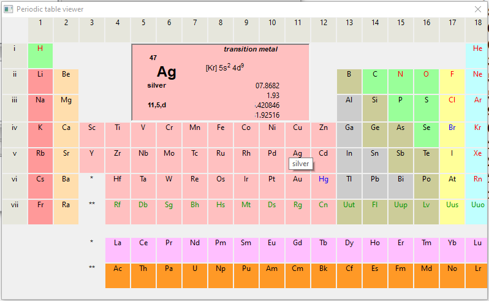By hovering over an element, detailed information from MDANSE elements database will show up at the top. By clicking on an element, a list of its isotopes will appear as a menu:
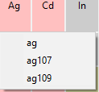When an isotope is selected, all the information that is stored in the database will be displayed:
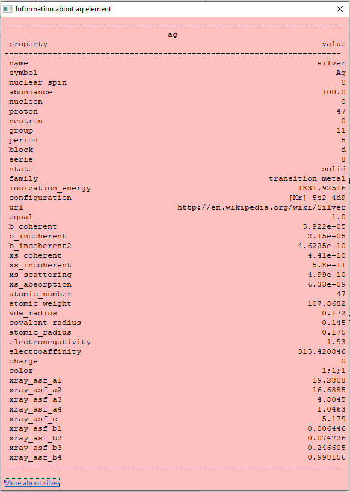Clicking on the link at the bottom opens a Wikipedia article about that element. Other than that, you cannot interact with this page in any way. If you would like to change any of the displayed data, you will have to use the Elements database editor.
7.6.2. Elements database editor
Clicking on this button opens this window:
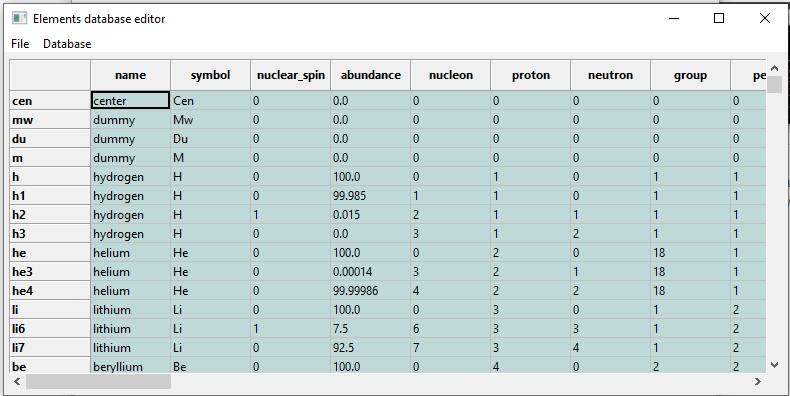It can be interacted with like a normal spreadsheet; click (or double click) on a field you want to edit and type the new value. Once you are done with making changes, don’t forget to save them before closing. You can do that through the file menu.
7.6.2.1. File menu

Save database overwrites the current database, so it is best to be careful. Due to that, you will need to confirm a prompt before the changes are saved.
Save database as opens a file browser which can be used to save the changes in a new file.
7.6.3. 2D/3D Plotter
Upon clicking on the icon, this window will open:

To use it, a file has to be loaded first. This can be done using the File menu -> Load, which will open a file browser. Only NetCDF files (ending in .nc, .cdf, or .netcdf) and HDF5 files (extension .h5 or .hdf) can be loaded; other file formats will result in an error.
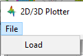Once a file is loaded, it will appear in the data panel. This is a table listing all the files loaded in the Plotter, showing the name MDANSE assigned to the loaded instance (i.e. a key to e.g. distinguish between files with the same name), the name of the file, and the full path to the file.

Clicking on a loaded file will show all the variables that can be plotted in the box below, though the whole Plotter window might have to be resized so that more than one variable shows up at a time. A preview of the plot of the first variable will also be shown at the bottom, but only for 1D and 2D plots.

Once you have selected a variable from the second box, you can select a plotter from the Select Plotter drop-down menu. The following plotters are available in MDANSE:
Plotter |
Dimension |
Description |
Line |
1D |
A simple plot depicting the dependence of one variable on another. It consists of a single line. Uses normal plot() function from matplotlib. |
Image |
2D |
Plots data as an image, i.e. on a 2D regular raster. Uses matplotlib imshow() function. |
Elevation |
2D |
Plots data as an image. Uses VTK. |
2D Slice |
2D |
Plots a subset of a 3D variable. |
Isosurface |
3D |
A 3D plot depicting a surface through lines or one continuous surface. Uses VTK. |
Scalar-Field |
3D |
After all that is selected, the data can be plotted. There are two options for this, represented by the two buttons:
Plot in new window creates a new tab, ie. a separate plot, inside the Multiple Plot Window.


Plot in current figure plots the chosen data in the currently selected tab of the Multiple Plot Window, ie. it will create a plot with multiple lines etc.

As can be seen, the plot automatically adjusts the axes so that all plots fit. More details on plotting options is in Appendix 3.
7.6.4. Units Editor
When opened, this window will appear:

Here, the units that MDANSE uses can be managed. The white box on the left is a list of all the defined units, which includes both the units that come together with MDANSE as well as any user-defined units. More information on how units work is in the Units section. This list is interactive; any unit in it can be clicked on, which displays its details, like so:
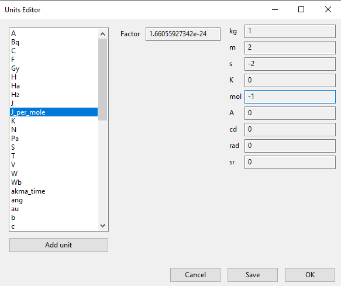The fields in the middle and right of the window show the definition of the selected unit using SI units. The selected unit is equivalent to Factor * the product of the SI units listed on the right, where the values inside the fields are the powers of the SI units. Therefore, the unit shown in the above example, J_per_mole, is in MDANSE defined as 1.66055927342 * 10-24 kg m2 mol-1.
There are four buttons in the Units Editor window:
Cancel closes the window without saving any changes made.
Save saves the changes for future use; they can be used in the current session and in any future ones. The Units Editor window is also closed.
OK saves the changes for the current session; they can be used until the main MDANSE window is closed. When MDANSE is closed and opened again, the changes will not appear. The Units Editor window is also closed.
Add unit opens the following window, which can be used to add new units or edit existing ones.

Unit name
Format: str
Default: None
Description: the name of the unit. If a name not yet registered is inputted, a new unit will be created. Please note that the names are case-sensitive, and that already existing units cannot be overwritten.
Factor
Format: float
Default: 1.0
Description:
unit (any of the displayed SI basic units)
Format: int (it must lie in the interval )
Default: 0
Description: the power of the SI unit.
OK adds the new definition to the unit registry, but the change has to be saved in the Units Editor window to be useable in the rest of MDANSE. Please not that once, a new unit is added, it cannot be changed only removed.
Cancel closes the window without saving the changes.
Further, existing units can be deleted from the Units Editor window. To do this, the unit to be deleted has to be selected by clicking on it, and then the ‘Delete’ button has to be clicked. This will show a prompt for confirmation, and once that is accepted, the unit will be removed, though the change has to be saved by clicking on either the OK or Cancel button.
7.7. Data panel
This is where files loaded into MDANSE are displayed. Trajectories and results of analyses are distinctly separated as ‘mmtk trajectory’ and ‘netcdf data’ respectively. To proceed, you need to double-click on a file name here to bring it to the Working panel. This can be done multiple times for each file.
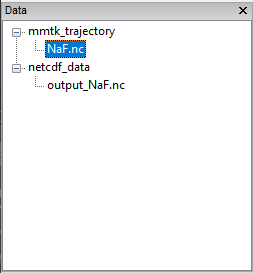7.8. Working panel
The selected files appear in the Working panel as tabs. The currently opened tab is the one that whose file is going to be used for analysis and other operations when using the Plugins panel.

The Working panel is also the space which some of the plugins use to do their job. The Molecular Viewer, Animation, and 2D/3D Plotter plugins all load into the Working panel. Furthermore, it is possible to bring the windows opened by the other plugins into the working panel, like below. To do that, you have to drag the window so that its top is near the top of the working panel, where the tabs are. An indicator will appear when you got it right.
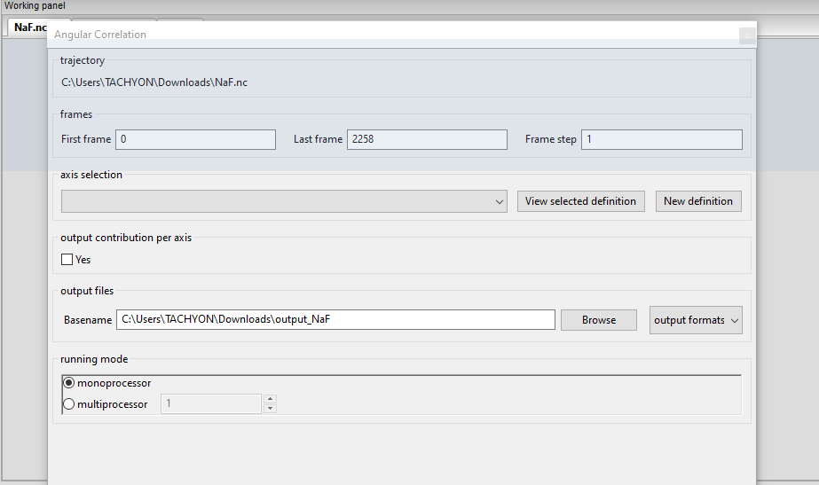 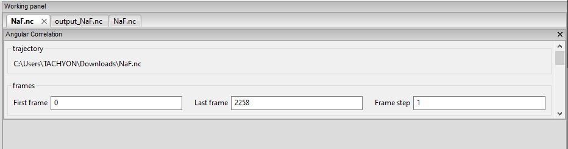7.9. Plugins panel
This is the heart of MDANSE, where all the analyses as well as other important features can be found. If the selected tab in the Working panel is from a trajectory, the Plugins panel will look like this:
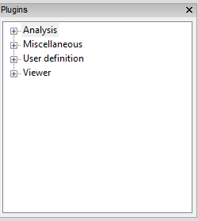If it is from the result of an analysis, it will look like this:
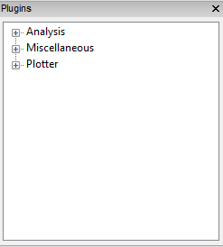There are far fewer options available for analysis results. Nevertheless, in each of the sections below, it will be stated if the plugin appears for trajectories, results, or both.
All the options in above are just headings. To get to the actual plugins, click on the ‘plus’ buttons next to the text to unhide the options. If there is no such button next to a text, that means that that is a plugin and can be launched by double-clicking on the text.
7.9.1. Analysis
This menu contains all data manipulations and appears as in the picture below when a trajectory is loaded. As indicated by the plus buttons, each of these options is a menu in itself.
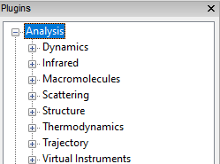They are explored in greater depth in the following sections, and the analyses are in turn explored in their subsections. Some contain a discussion of the theory behind the computation, and all show the analysis window of that analysis, the one that is launched by double-clicking the option in this Plugins panel.
Each analysis window is different since each requires different parameters to be configured before it can be run. However, all of them have the same structure (example window below), consisting of these parts:
trajectory box shows the path to the MMTK NetCDF trajectory that this analysis will be performed on.
Parameters are a group of options, of which the common ones are discussed in depth in Appendix 2. These are the options which vary from analysis to analysis. The only parameters that exist on every analysis are Frames and Output files.
Buttons are situated at the bottom of each analysis and consist of these options:
Help opens the source code documentation for the relevant class in an MDANSE window.
Save opens a file browser that allows you to save the current analysis with the set options into a python script which can be run from the command line. More information about scripts in Using MDANSE from command line.
Run starts the analysis and prompts you whether you want to close the window. The status of the analysis can be found in the Jobs panel, though there is a known bug where successful analyses do not show up.
7.9.1.1. Dynamics
This section contains the following Plugins:
7.9.1.1.1. Angular Correlation
Available for trajectories only
Theory and implementation
The angular correlation analysis computes the autocorrelation of a set of vectors describing the extent of a molecule in three orthogonal directions. This kind of analysis can be useful when trying to highlight the fact that a molecule is constrained in a given direction.
For a given triplet of non-colinear atoms g=(a1,a2,a3), one can derive an orthonormal set of three vectors v1, v2, v3 using the following scheme:
(1)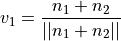
where n1 and n2 are respectively the normalized vectors along (a1,a2) and (a1,a3) directions.
v2 is defined as the clockwise normal vector orthogonal to v1 that belongs to the plane defined by a1, a2 and a3 atoms
(2)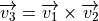
Thus, one can define the following autocorrelation functions for the vectors v1, v2 and v3 defined on triplet t :
(3)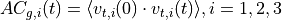
And the angular correlation averaged over all triplets is:
(4)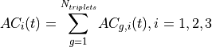
where Ntriplets is the number of selected triplets.
GUI

Parameters:
7.9.1.1.2. Density Of States
Theory and implementation
MDANSE calculates the power spectrum of the VACF, which in case of the mass-weighted VACF defines the phonon discrete DOS, (see the section on VACF) defined as:
(5)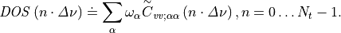
Nt is the total number of time steps and
(6)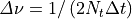
is the frequency step.
(7)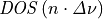
can be computed either for the isotropic case or with respect to a user-defined axis. The spectrum
(8)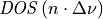
is computed from the unnormalized VACF, such that DOS(0) gives an approximate value for the diffusion constant
(9)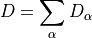
(see Eqs. and ).
(10)
is smoothed by applying a Gaussian window in the time domain [10] (see the section on Spatial Density). Its width in the time domain is
(11)
, where T is the length of the simulation. We remark that the diffusion constant obtained from DOS is biased due to the spectral smoothing procedure since the VACF is weighted by this window Gaussian function. MDANSE computes the density of states starting from both atomic velocities and atomic coordinates. In this case the velocities are computed by numerical differentiation of the coordinate trajectories correcting first for possible jumps due to periodic boundary conditions.
GUI
available for trajectories only

{kind=link}
{kind=link}
{kind=link}
{kind=link}
{kind=link}
{kind=link}
{kind=link}
{kind=link}
{kind=link}
{kind=link}
{kind=link}
{kind=link}
{kind=link}
{kind=link}
{kind=link}
{kind=link}
{kind=link}
{kind=link}
{kind=link}
{kind=link}
{kind=link}
{kind=link}
{kind=link}
{kind=link}
{kind=link}
7.9.1.1.3. General AutoCorrelation Function
available for trajectories only


trajectory variable
Format: drop-down
Default: configuration
Description: determines the variable for which the autocorrelation function is calculated. Therefore, if the selected variable is ‘configuration’, essentially position autocorrelation function is calculated.
7.9.1.1.4. Mean Square Displacement
Theory and implementation
Molecules in liquids and gases do not stay in the same place but move constantly. This process is called diffusion and it happens quite naturally in fluids at equilibrium. During this process, the motion of an individual molecule does not follow a simple path. As it travels, the molecule undergoes some collisions with other molecules which prevent it from following a straight line. If the path is examined in close detail, it will be seen to be a good approximation to a random walk. Mathematically, a random walk is a series of steps where each step is taken in a completely random direction from the one before. This kind of path was famously analysed by Albert Einstein in a study of Brownian motion. He showed that the Mean-Square Displacement (MSD) of a particle following a random walk is proportional to the time elapsed. This relationship can be written as
(12)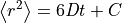
where < r2 > is the MSD and t is the time. D and C are constants. The constant D defines the so-called diffusion coefficient.
The Figure 1 shows an example of an MSD analysis performed on a water box of 768 water molecules. To get the diffusion coefficient out of this plot, the slope of the linear part of the plot should be calculated.
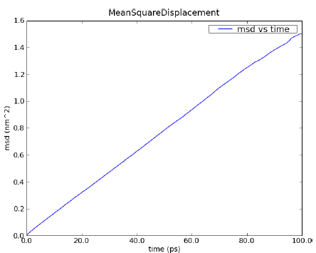{kind=link}
Figure 1: MSD calculated for a 100 ps MD simulation of 256 water molecules using NPT condition at 1 bar and 300 K.
Defining
(13)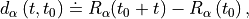
the MSD of particle  can be defined as:
can be defined as:
(14)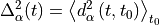
where R_(t0) and R_(t0 + t) are respectively the position of particle
at times t0 and t0 + t. One can introduce an MSD with respect to a
given axis n:
(15)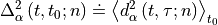
with
(16)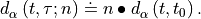
The calculation of MSD is the standard way to obtain diffusion coefficients from Molecular Dynamics (MD) simulations. Assuming Einstein-diffusion in the long time limit one has for isotropic systems
(17)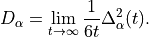
There exists also a well-known relation between the MSD and the velocity autocorrelation function. Writing
(18)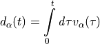
in Eq.  one can show (see
e.g. [11]) that
one can show (see
e.g. [11]) that
(19)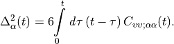
Using now the definition of the diffusion coefficient one obtains the relation
(20)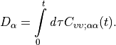
With Eq. 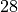 this can also be written as
(21)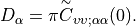
Computationally, the MSD is calculated using the Fast Correlation Algorithm (FCA) [12]. In this framework, in the discrete case, the mean-square displacement of a particle is given by
(22)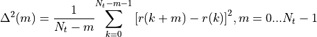
where r(k) is the particle trajectory and 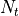 is the number of frames of the trajectory. We define now the auxiliary function
(23)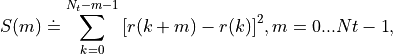
which is split as follows:
(24)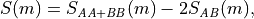
(25)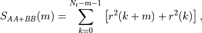
(26)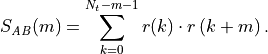
The function SAB(m) can be computed using the FCA method described in the section on Spatial Density. For SAA+BB(m) the following recursion relation holds:
(27)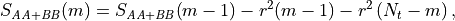
(28)
This allows one to construct the following efficient scheme for the computation of the MSD:
Compute
(29)
;
(30)
.
Compute
(31)
Compute SAB(m) using the Fast Fourier Transform (FFT) method.
Compute MSD(m) in the following loop:
(32)
(33)
m running from 0 to Nt - 1
It should be noted that the efficiency of this algorithm is the same as for the FCA computation
of time correlation functions since the number of operations in step (1), (2), and (4) grows
linearly with Nt.
GUI
{kind=link}
{kind=link}
7.9.1.1.5. Order Parameter
Theory and implementation
Adequate and accurate cross comparison of the NMR and MD simulation data is of crucial importance in versatile studies conformational dynamics of proteins. NMR relaxation spectroscopy has proven to be a unique approach for a site-specific investigation of both global tumbling and internal motions of proteins. The molecular motions modulate the magnetic interactions between the nuclear spins and lead for each nuclear spin to a relaxation behaviour which reflects its environment. Since its first applications to the study of protein dynamics, a wide variety of experiments has been proposed to investigate backbone as well as side chain dynamics. Among them, the heteronuclear relaxation measurement of amide backbone 15N nuclei is one of the most widespread techniques. The relationship between microscopic motions and measured spin relaxation rates is given by Redfield’s theory [13]. Under the hypothesis that 15N relaxation occurs through dipole-dipole interactions with the directly bonded 1H atom and chemical shift anisotropy (CSA), and assuming that the tensor describing the CSA is axially symmetric with its axis parallel to the N-H bond, the relaxation rates of the 15N nuclei are determined by a time correlation function,
(34)
which describes the dynamics of a unit vector μi(t) pointing along the 15N-1H bond of the residue i in the laboratory frame. Here P2(.) is the second order Legendre polynomial. The Redfield theory shows that relaxation measurements probe the relaxation dynamics of a selected nuclear spin only at a few frequencies. Moreover, only a limited number of independent observables are accessible. Hence, to relate relaxation data to protein dynamics one has to postulate either a dynamical model for molecular motions or a functional form for Cii(t), yet depending on a limited number of adjustable parameters. Usually, the tumbling motion of proteins in solution is assumed isotropic and uncorrelated with the internal motions, such that:
(35)
where CG(t) and
(36)
denote the global and the internal time correlation function, respectively. Within the so-called model free approach [14], [15] the internal correlation function is modelled by an exponential,
(37)
Here the asymptotic value
(38)
is the so-called generalized order parameter, which indicates the degree of spatial restriction of the internal motions of a bond vector, while the characteristic time
(39)
is an effective correlation time, setting the time scale of the internal relaxation processes.
(40)
can adopt values ranging from 0 (completely disordered) to 1 (fully ordered). So,
(41)
is the appropriate indicator of protein backbone motions in computationally feasible timescales as it describes the spatial aspects of the reorientational motion of N-H peptidic bonds vector.
When performing Order Parameter analysis, MDANSE computes for each residue i both
(42)
and
(43)
. It also computes a correlation function averaged over all the selected bonds defined as:
(44)
where Nbonds is the number of selected bonds for the analysis.
GUI
available for trajectories only

reference direction
x-component
Format: int or float
Default: 0
Description: <insert>
y-component
Format: int or float
Default: 0
Description: <insert>
z-component
Format: int or float
Default: 1
Description: <insert>
7.9.1.1.6. Position AutoCorrelation Function
available for trajectories only
{kind=link}
{kind=link}
7.9.1.1.7. Velocity AutoCorrelation Function
Theory and implementation
The Velocity AutoCorrelation Function (VACF) is another interesting property describing the dynamics of a molecular system. Indeed, it reveals the underlying nature of the forces acting on the system.
In a molecular system that would be made of non-interacting particles, the velocities would be constant at any time triggering the VACF to be a constant value. Now, if we think about a system with small interactions such as in a gas-phase, the magnitude and direction of the velocity of a particle will change gradually over time due to its collision with the other particles of the molecular system. In such a system, the VACF will be represented by a decaying exponential.
In the case of solid phase, the interactions are much stronger and, as a results, the atoms are bound to a given position from which they will move backwards and forwards oscillating between positive and negative values of their velocity. The oscillations will not be of equal magnitude however, but will decay in time, because there are still perturbative forces acting on the atoms to disrupt the perfection of their oscillatory motion. So, in that case the VACF will look like a damped harmonic motion.
Finally, in the case of liquid phase, the atoms have more freedom than in solid phase and because of the diffusion process, the oscillatory motion seen in solid phase will be cancelled quite rapidly depending on the density of the system. So, the VACF will just have one very damped oscillation before decaying to zero. This decaying time can be considered as the average time for a collision between two atoms to occur before they diffuse away.
Mathematically, the VACF of atom in an atomic or molecular system is
usually defined as
(45)
In some cases, e.g. for non-isotropic systems, it is useful to define VACF along a given axis,
(46)
where v:math:alpha``(t; n) is given by
(47)
The vector n is a unit vector defining a space-fixed axis.
The VACF of the particles in a many body system can be related to the incoherent dynamic structure factor by the relation:
(48)
where G( ) is the Density Of States (DOS). For an isotropic system it
reads
) is the Density Of States (DOS). For an isotropic system it
reads
(49)
(50)
For non-isotropic systems, relation holds if the DOS is computed from the atomic velocity autocorrelation functions
(51)
, where nq is the unit vector in the direction of q.
GUI
available for trajectories only
{kind=link}
{kind=link}
7.9.1.2. Infrared
7.9.1.2.1. Dipole AutoCorrelation Function
available for trajectories only
{kind=link}
7.9.1.3. Macromolecules
This section has one subsection, Lipids, which contains following Plugins:
Refolded Membrane Trajectory
7.9.1.3.1. Refolded Membrane Trajectory
available for trajectories only
{kind=link}
membrane axis
Format: drop-down
Default: c
Description: the axis along which is used for the trajectory manipulation, the normal to the membrane.
name of the lipid of the upper leaflet
Format: str
Default: DMPC
Description: the name of the lipid positioned in the upper leaflet of the membrane. It will be repositioned into the upper part of the simulation box. The name must be the name with which MMTK refers to the lipid.
name of the lipid of the lower leaflet
Format: str
Default: DMPC
Description: the name of the lipid positioned in the lower leaflet of the membrane. It will be repositioned into the lower part of the simulation box. The name must be the name with which MMTK refers to the lipid.
7.9.1.4. Scattering
Below is a list of Plugins contained in this section. They are all used to calculate neutron spectroscopy observables from the trajectory.
These plugins will be explored in depth in further sections, however, before that, it is important to understand how MDANSE performs these analyses. A part of that are Q vectors, which are used to perform these analyses. An in-depth discussion of this aspect is present in Appendix 2.
7.9.1.4.1. Theory and background
The quantity of interest in neutron scattering experiments with thermal
neutrons is the dynamic structure factor, S(q, ), which is
closely related to the double differential cross-section [7],
(52)
. The double differential cross section is defined as the number of neutrons which are scattered per unit time into the solid angle interval
(53)
and into the energy interval
(54)
It is normalized to d, dE, and the flux of the incoming neutrons,
(55)
Here N is the number of atoms, and k ≡ |k| and k0 ≡ |k0| are the wave numbers of scattered and incident neutrons, respectively. They are related to the corresponding neutron energies by
(56)
and
(57)
where  is the neutron mass. The arguments of the dynamic structure factor,
is the neutron mass. The arguments of the dynamic structure factor,
 and , are the momentum and energy transfer in units of
, respectively:
and , are the momentum and energy transfer in units of
, respectively:
(58)
(59)
The modulus of the momentum transfer can be expressed in the scattering
angle  , the energy transfer, and the energy of the
incident neutrons:
, the energy transfer, and the energy of the
incident neutrons:
(60)
The dynamic structure factor contains information about the structure and dynamics of the scattering system [16]. It can be written as
F(q, t) is called the intermediate scattering function and is defined as
(62)
(63)
The operators
in Eq. are the position
operators of the nuclei in the sample. The brackets
denote a quantum thermal average and the time dependence of the position
operators is defined by the Heisenberg picture. The quantities
 are the scattering lengths of the nuclei
which depend on the isotope and
the relative orientation of the spin of the neutron and the spin of the
scattering nucleus. If the spins of the nuclei and the neutron are not
prepared in a special orientation one can assume a random relative
orientation and that spin and position of the nuclei are uncorrelated.
The symbol
are the scattering lengths of the nuclei
which depend on the isotope and
the relative orientation of the spin of the neutron and the spin of the
scattering nucleus. If the spins of the nuclei and the neutron are not
prepared in a special orientation one can assume a random relative
orientation and that spin and position of the nuclei are uncorrelated.
The symbol
appearing in
(64)
denotes an average over isotopes and relative spin orientations of neutron and nucleus.
Usually, one splits the intermediate scattering function and the dynamic structure factor into their coherent and incoherent parts which describe collective and single particle motions, respectively. Defining
(65)
(66)
the coherent and incoherent intermediate scattering functions can be cast in the form
(67)
(68)
Rewriting these formulas, MDANSE introduces the partial terms as:
(69)
(70)
where:
(71)
(72)
where nI, nJ, Nspecies, I,coh,inc
and J,coh,inc are defined in Section ??.
The corresponding dynamic structure factors are obtained by performing the Fourier transformation defined in Eq. .
An important quantity describing structural properties of liquids is the static structure factor, which is defined as
(73)
In the classical framework the intermediate scattering functions are interpreted as classical time correlation functions. The position operators are replaced by time-dependent vector functions and quantum thermal averages are replaced by classical ensemble averages. It is well known that this procedure leads to a loss of the universal detailed balance relation,
(74)
and also to a loss of all odd moments
(75)
The odd moments vanish since the classical dynamic structure factor is
even in , assuming invariance of the scattering process with respect to
reflections in space. The first moment is also universal. For an atomic
liquid, containing only one sort of atoms, it reads
(76)
where M is the mass of the atoms. Formula 47 shows that the first moment is given by the average kinetic energy (in units of ) of a particle which receives a momentum transfer . Therefore, is called the recoil moment. A number of ‘recipes’ has been suggested to correct classical dynamic structure factors for detailed balance and to describe recoil effects in an approximate way. The most popular one has been suggested by Schofield [17]
(77)
One can easily verify that the resulting dynamic structure factor fulfils the relation of detailed balance. Formally, the correction is correct to first order in . Therefore, it cannot be used for large q-values which correspond to large momentum transfers . This is actually true for all correction methods which have suggested so far. For more details we refer to Ref. [18].
MDANSE computes the partial S(Q)’s as the Fourier transform of the partial g(r), corresponding to the Faber-Ziman definition:
(78)
(49)
The total S(Q) is computed as a weighted sum similar to the one used for the total g(r). In the case of the analysis ‘X-ray Static structure factor’, the Q-dependence of the atomic form factors is taken into account in this weighted sum.
Again, Soper has provided experimental data (table 4 in ISRN Physical Chemistry, 279463 (2013), given in file soper13_fx.dat). Here a source of confusion is that the data can be normalized in different ways (see Soper’s paper). Using the normalization II in that reference we have that:
(79)
Where S(Q) would be the static structure factor (going to 1 at large Q) computed by MDANSE. Therefore, even after using MDANSE we should recalculate the x-ray observable using the atomic factors.
7.9.1.4.2. Current Correlation Function
Theory and implementation
Current correlation function is typically used to study the propagation of excitations in disordered systems. In MDANSE, its longitudinal and transverse components are calculated, which are related to density fluctuations and propagating shear modes respectively. Formalism and other details can be found in Ref [19].
GUI
available for trajectories only
{kind=link}
interpolation mode (only applicable when interpolation order is set to something different than ‘no interpolation’)
Format: str
Default: automatic
Description: the method that will be used to interpolate velocities. All modes give identical results but differ in speed and memory usage. The following modes are available:
one-time in-memory interpolation
In this mode, all velocities are interpolated once, at the beginning, and stored in memory. This mode is the fastest but requires large amounts of memory. It is recommended for use with small trajectories. When used with large trajectories, it is advisable that a computer with sufficient memory is used.
repeated interpolation
In this mode, all velocities are interpolated in each loop over Q-shells. Therefore, it is slower, though less memory is required. However, the largest memory usage depends on the composition of the sample; it is most efficient when all elements have equal number of particles in the sample, and the least when one element has the majority of particles. Thus, it is advisable that this mode is used with medium trajectories with even distribution of elements, especially when the computer has only an HDD. When used with large trajectories, please ensure that the computer has sufficient memory.
one-time disk interpolation
In this mode, all velocities are interpolated once, at the beginning, and stored on disk. This makes it slow but with little memory requirement. This balance of speed and memory can be further altered by using the ‘number of preloaded frames’ option. This mode is meant for when the computer has insufficient memory for the other modes and is advisable to be used with large trajectories. Further, since disk is involved, it is advisable that the computer has an SSD, and that the operating system’s temp folder is on that disk.
automatic
In this mode, MDANSE selects one of the above modes to be used that should be best given the hardware. It does this by estimating the memory requirements and comparing them to the total memory of the computer.
number of preloaded frames (only applicable when ‘interpolation mode’ is set to ‘one-time disk interpolation)
Format: int
Default: 50
Description: this option allows for the optimisation of the ‘one-time disk interpolation’ interpolation mode. It governs the number of frames for which the velocities are loaded from disk to memory at once. Thus, if it is set to 1, the interpolated velocities of all particles are loaded into memory one frame at a time, and if it is 50, 50 frames worth of interpolated velocities are loaded, and then no loading occurs for the next 49 frames, after which the next 50 are loaded. This way, the speed and memory usage can be adjusted; the larger the number, the faster (though with diminishing returns) but the more memory required.
Please note that this option can be set to a value of -1, which will cause all the interpolated velocities for all the particles of one element to be loaded into memory at once. This way, the memory usage is comparable to the ‘repeated interpolation’ interpolation mode. Further, when SSD is used, the analysis can be faster than in the ‘repeated interpolation’ mode.
7.9.1.4.3. Dynamic Coherent Structure Factor
Theory and implementation
Please refer to Scattering Theory and Background for more details about the theoretical background related to the dynamic coherent structure factor. In this analysis, MDANSE proceeds in two steps. First, it computes the partial and total intermediate coherent scattering function using equation . Then, the partial and total dynamic coherent structure factors are obtained by performing the Fourier Transformation, defined in Eq. , respectively on the total and partial intermediate coherent scattering functions.
MDANSE computes the coherent intermediate scattering function on a rectangular grid of equidistantly spaced points along the time-and the q-axis, respectively:
F
(80)
(81)
where Nt is the number of time steps in the coordinate time
series, Nq is a user-defined number of q-shells,
Nspecies is the number of selected species, nI the
number of atoms of species I, I the weight for specie I
(see Section ?? for more details) and
(82)
is the Fourier transformed particle density for specie I defined as,
(83)
The symbol
(84)
in Eq. denotes an average over q-vectors having approximately the same modulus
(85)
. The particle density must not change if jumps in the particle trajectories due to periodic boundary conditions occur. In addition, the average particle density, , must not change. This can be achieved by choosing q-vectors on a lattice which is reciprocal to the lattice defined by the MD box. Let b1, b2, b3 be the basis vectors which span the MD cell. Any position vector in the MD cell can be written as
(86)
with x’, y’, z’ having values between 0 and 1. The primes indicate that
the coordinates are box coordinates. A jump due to periodic boundary
conditions causes x’, y’, z’ to jump by  . The set of dual basis
vectors b1, b2, b3 is defined by
the relation
. The set of dual basis
vectors b1, b2, b3 is defined by
the relation
(87)
If the q-vectors are now chosen as
(88)
where k,l,m are integer numbers, jumps in the particle trajectories
produce phase changes of multiples of  in the Fourier transformed
particle density, i.e. leave it unchanged. One can define a grid of
q-shells or a grid of q-vectors along a given direction or on a
given plane, giving in addition a tolerance for q. MDANSE looks
then for q-vectors of the form given in Eq. 61 whose moduli
deviate within the prescribed tolerance from the equidistant q-grid.
From these q-vectors only a maximum number per grid-point (called
generically q-shell also in the anisotropic case) is kept.
in the Fourier transformed
particle density, i.e. leave it unchanged. One can define a grid of
q-shells or a grid of q-vectors along a given direction or on a
given plane, giving in addition a tolerance for q. MDANSE looks
then for q-vectors of the form given in Eq. 61 whose moduli
deviate within the prescribed tolerance from the equidistant q-grid.
From these q-vectors only a maximum number per grid-point (called
generically q-shell also in the anisotropic case) is kept.
The q-vectors can be generated isotropically, anisotropically or along user-defined directions. The
may be negative if they represent normalized coherent scattering lengths, i.e.
(89)
Negative coherent scattering lengths occur in hydrogenous materials since
Is negative [20]. The density-density correlation is computed via the FCA technique described in the section on Spatial Density.
GUI
available for trajectories only
{kind=link}
{kind=link}
7.9.1.4.4. Dynamic Incoherent Structure Factor
Theory and implementation
Please refer to Scattering Theory and Background section for more details about the theoretical background related to the dynamic incoherent structure factor. In this analysis, MDANSE proceeds in two steps. First, it computes the partial and total intermediate incoherent scattering function Finc(q, t) using equation 41. Then, the partial and total dynamic incoherent structure factors are obtained by performing the Fourier Transformation, defined in Eq. 33, respectively on the total and partial intermediate incoherent scattering function.
MDANSE computes the incoherent intermediate scattering function on a rectangular grid of equidistantly spaced points along the time-and the q-axis, respectively:
(90)
where Nt is the number of time steps in the coordinate time
series, Nq is a user-defined number of q-shells,
Nspecies is the number of selected species, nI the
number of atoms of species I, I the weight for specie I
(see Section ?? for more details) and
(91)
is defined as:
(92)
The symbol in Eq. 58 denotes an average over q-vectors having approximately the same modulus
(93)
. The particle density must not change if jumps in the particle trajectories due to periodic boundary conditions occur. In addition, the average particle density, N/V, must not change. This can be achieved by choosing q-vectors on a lattice which is reciprocal to the lattice defined by the MD box. Let b1, b2, b3 be the basis vectors which span the MD cell. Any position vector in the MD cell can be written as
(94)
with x’, y’, z’ having values between 0 and 1. The primes indicate that the coordinates are box coordinates. A jump due to periodic boundary conditions causes x’, y’, z’ to jump by ∓1. The set of dual basis vectors b1, b2, b3 is defined by the relation
(95)
If the q-vectors are now chosen as
(96)
where k,l,m are integer numbers, jumps in the particle trajectories produce phase changes of multiples of 2π in the Fourier transformed particle density, i.e. leave it unchanged. One can define a grid of q-shells or a grid of q-vectors along a given direction or on a given plane, giving in addition a tolerance for q. MDANSE looks then for q-vectors of the form given in Eq. 61 whose moduli deviate within the prescribed tolerance from the equidistant q-grid. From these q-vectors only a maximum number per grid-point (called generically q-shell also in the anisotropic case) is kept.
The q-vectors can be generated isotropically, anisotropically or along user-defined directions.
The correlation functions defined in 58 are computed via the FCA technique described in Spatial Density section. Although the efficient FCA technique is used to compute the atomic time correlation functions, the program may consume a considerable amount of CPU-time since the number of time correlation functions to be computed equals the number of atoms times the total number of q-vectors. This analysis is actually one of the most time-consuming among all the analysis available in MDANSE.
GUI
available for trajectories only
{kind=link}
{kind=link}
7.9.1.4.5. Elastic Incoherent Structure Factor
Theory and implementation
The Elastic Incoherent Structure Factor (EISF) is defined as the limit of the incoherent intermediate scattering function for infinite time,
(97)
Using the above definition of the EISF one can decompose the incoherent intermediate scattering function as follows:
(98)
where Finc‘(q,t) decays to zero for infinite time. Taking now the Fourier transform it follows immediately that
(99)
The EISF appears as the amplitude of the elastic line in the neutron scattering spectrum. Elastic scattering is only present for systems in which the atomic motion is confined in space, as for solids. To understand which information is contained in the EISF we consider for simplicity a system where only one sort of atoms is visible to the neutrons. To a very good approximation this is the case for all systems containing a large amount of hydrogen atoms, as biological systems. Incoherent scattering from hydrogen dominates by far all other contributions. Using the definition of the van Hove self-correlation function Gs(r, t) [20],
(100)
which can be interpreted as the conditional probability to find a tagged particle at the position r at time t, given it started at r = 0, one can write:
(101)
The EISF gives the sampling distribution of the points in space in the limit of infinite time. In a real experiment this means times longer than the time which is observable with a given instrument. The EISF vanishes for all systems in which the particles can access an infinite volume since Gs(r, t) approaches 1/V for large times. This is the case for molecules in liquids and gases.
For computational purposes it is convenient to use the following representation of the EISF [21]:
(102)
where Nspecies is the number of selected species, nI
the number of atoms of species I, I,inc the weight for
specie I (see Section ?? for more details) and for each specie the
following expression for the elastic incoherent scattering function is
(103)
This expression is derived from definition 62 of the EISF and expression 41 for the intermediate scattering function, using that for infinite time the relation
(104)
holds. In this way the computation of the EISF is reduced to the computation of a static thermal average. We remark at this point that the length of the MD trajectory from which the EISF is computed should be long enough to allow for a representative sampling of the conformational space.
MDANSE allows one to compute the elastic incoherent structure factor on a grid of equidistantly spaced points along the q-axis:
(105)
where Nq is a user-defined number of q-shells, the values for qm are defined as
(106)
, and for each specie the following expression for the elastic incoherent scattering function is:
(107)
Here the symbol denotes an average over the q-vectors having the same modulus qm. The program corrects the atomic input trajectories for jumps due to periodic boundary conditions.
GUI
available for trajectories only
{kind=link}
{kind=link}
7.9.1.4.6. Gaussian Dynamic Incoherent Structure Factor
Theory and implementation
The MSD can be related to the incoherent intermediate scattering function via the cumulant expansion [11], [22]
(108)
where Nspecies is the number of selected species, nI
the number of atoms of species I, I,inc the weight for
specie I (see Section ?? for more details) and
(109)
The cumulants
(110)
are identified as
(111)
(112)
The vector nq is the unit vector in the direction of q. In the Gaussian approximation the above expansion is truncated after the q2-term. For certain model systems like the ideal gas, the harmonic oscillator, and a particle undergoing Einstein diffusion, this is exact. For these systems the incoherent intermediate scattering function is completely determined by the MSD. MDANSE allows one to compute the total and partial incoherent intermediate scattering function in the Gaussian approximation by discretizing equation 71:
(113)
with for each specie the following expression for the intermediate scattering function:
(114)
(115)
Nt is the total number of time steps in the coordinate time series and Nq is a user-defined number of q-shells. The (q, t)-grid is the same as for the calculation of the intermediate incoherent scattering function (see Dynamic Incoherent Structure Factor). The quantities
(116)
and
(117)
are the mean-square displacements, defined in Equations 5 and 6, respectively. They are computed by using the algorithm described in the Mean Square Displacement section. MDANSE corrects the atomic input trajectories for jumps due to periodic boundary conditions. It should be noted that the computation of the intermediate scattering function in the Gaussian approximation is much ‘cheaper’ than the computation of the full intermediate scattering function, Finc(q, t), since no averaging over different q-vectors needs to be performed. It is sufficient to compute a single mean-square displacement per atom.
GUI
available for trajectories only
{kind=link}
{kind=link}
q shells
from
Format: int
Default: 0
Description: <insert>
to
Format: int
Default: 10
Description: <insert>
by step of
Format: int
Default: 1
Description: determines the periodicity of which values are used and which are skipped. 1 means that all values are used, 2 means every other one is, etc.
7.9.1.4.7. Neutron Dynamic Total Structure Factor
available for trajectories only
{kind=link}
7.9.1.4.8. Structure Factor From Scattering Function
available for analysis results only
it appears in all analysis results, even for non-scattering analyses which cannot be used to compute this
{kind=link}
7.9.1.5. Structure
This section has the following Plugins:
7.9.1.5.1. Area Per Molecule
available for trajectories only
{kind=link}
area vectors
Format: drop-down
Default: a, b
Description: <insert>
molecule name
Format: str
Default: DMPC
Description: the name of the molecules for which the calculation will take place. The name inputted here must match a name that MMTK assigned to inside the NetCDF file.
7.9.1.5.2. Coordination Number
Theory and implementation
In chemistry, the Coordination Number (CN) is the total number of neighbours of a central atom in a molecule or ion. The definition used in MDANSE is somewhat different and can be seen as an extension of as the former definition. Indeed, in MDANSE, the CN is not defined over one defined central atom but around the centres of gravity of a set of group of atoms. So, if only one group made of only atom is selected for the analysis, then, the definition is the same as the original definition. In that context, the CN is defined as:
(118)
where NG is the number of groups of atoms, Nspecies is the number of species found in the system and ngI(r) is the CN defined for specie I defined as the number of atoms of species I found in a shell of width dr at a distance r of the center of gravity of the group of atom g.
MDANSE allows one to compute the CN on a set of equidistantly spaced distances at different times
(119)
where Nr and Nframes are respectively the number of distances and times at which the CN is evaluated and
(120)
is the number of atoms of specie I found within [rm, rm + dr] at frame f from the centre of gravity of group g.
From these expressions, several remarks can be done. Firstly, the Eqs. 79 and 80 can be restricted to intramolecular and intermolecular distances only. Secondly, these equations can be averaged over the selected frames providing a time averaged intra and intermolecular CN. Finally, the same equations (time-dependent and time-averaged) can be integrated over r to provide a cumulative CN. MDANSE computes all these variations.
The concept of CN is useful for structure-related analysis. It can reveal for instance some packing effects that may have occurred during the simulation.
GUI
available for trajectories only
{kind=link}
r values
from
Format: int
Default: 0
Description: the minimum distance from a central particle in nanometers taken into consideration. Only particles at that distance or further will be counted.
to
Format: int
Default: 10
Description: the maximum distance from a central particle in nanometers. Only particles up to and including this distance will be counted.
by step of
Format: int
Default: 1
Description: the size of the step in nanometers used to generate a range of values between the above two extremes above. Eg. using the default r-values, the range will be {0, 1, 2, 3, 4, 5, 6, 7, 8, 9, 10}.
7.9.1.5.3. Density Profile
available for trajectories only
{kind=link}
Format: drop-down
Default: c
Description: the simulation box axis that Density Profile will be calculated along.
dr
Format: float
Default: 0.01
Description: during Density Profile calculation the axis specified in the axis field is divided into a number of bins along its length. dr specifies how large each of these bins will be.
7.9.1.5.4. Eccentricity
available for trajectories only
{kind=link}
7.9.1.5.5. Molecular Trace
available for trajectories only
{kind=link}
spatial resolution
Format: float
Default: 0.1
Description: the resolution with which Molecular Trace is calculated. It is used to determine how many grid points are used to represent a unit of length.
7.9.1.5.6. Pair Distribution Function
Theory and implementation
The Pair Distribution Function (PDF) is an example of a pair correlation function, which describes how, on average, the atoms in a system are radially packed around each other. This proves to be a particularly effective way of describing the average structure of disordered molecular systems such as liquids. Also in systems like liquids, where there is continual movement of the atoms and a single snapshot of the system shows only the instantaneous disorder, it is extremely useful to be able to deal with the average structure.
The PDF is useful in other ways. For example, it is something that can be deduced experimentally from x-ray or neutron diffraction studies, thus providing a direct comparison between experiment and simulation. It can also be used in conjunction with the interatomic pair potential function to calculate the internal energy of the system, usually quite accurately.
Mathematically, the PDF can be computed using the following formula:
(121)
where Nspecies is the number of selected species, nI
and nJ are respectively the numbers of atoms of species I and
J, I and J respectively the weights for species
I and J (see Section ?? for more details) and
(122)
is the partial PDF for I and J species that can be defined as:
(123)
where  J is the density of atom of specie J and
J is the density of atom of specie J and
(124)
is the mean number of atoms of specie J in a shell of width dr at
distance r of the atom of specie I.
From the computation of PDF, two related quantities are also calculated; the Radial Distribution Function (RDF), defined as
(125)
and the Total Correlation Function (TCF), defined as
(126)
where 0 is the average atomic density, which is defined as
(127)
where N is the total number of atoms in the system and V the volume of the simulation.
All these quantities are initially calculated as intramolecular and intermolecular parts for each pair of atoms, which are then added to create the total PDF/RDF/TCF for each pair of atoms, as well as the total intramolecular and total intermolecular values. Lastly, the total functions are computed. Please note, however, that in the case of TCF, the below set of equations has been chosen, which will return results that differ from those of nMOLDYN.
(128)
(129)
(130)
GUI
available for trajectories only
{kind=link}
r values
from
Format: int
Default: 0
Description: the minimum distance from a central particle in nanometers taken into consideration. Only particles at that distance or further will be counted.
to
Format: int
Default: 10
Description: the maximum distance from a central particle in nanometers. Only particles up to and including this distance will be counted.
by step of
Format: int
Default: 1
Description: the size of the step in nanometers used to generate a range of values between the above two extremes above. Eg. using the default r-values, the range will be {0, 1, 2, 3, 4, 5, 6, 7, 8, 9, 10}.
7.9.1.5.7. Root Mean Square Deviation
Theory and implementation
The Root Mean-Square Deviation (RMSD) is maybe the most popular estimator of structural similarity. It is a numerical measure of the difference between two structures that can be defined as:
(131)
where N_ is the number of atoms of the system, and r_(t) and r_(tref )
are respectively the position of atom at time t and tref where tref is
a reference time usually chosen as the first step of the simulation.
Typically, RMSD is used to quantify the structural evolution of the
system during the simulation. It can provide precious information about
the system especially if it reached equilibrium or conversely if major
structural changes occurred during the simulation.
In Molecular Dynamics Analysis for Neutron Scattering Experiments (MDANSE), RMSD is computed using the discretized version of equation 83:
(132)
where Nt is the number of frames and
(133)
is the time step.
GUI
available for trajectories only
{kind=link}
reference frame
Format: int
Default: 0
Description: the number of the frame which will be used as reference for the calculation. The deviation will be calculated as how it deviates from the values in this frame.
7.9.1.5.8. Root Mean Square Fluctuation
available for trajectories only
{kind=link}
7.9.1.5.9. Radius Of Gyration
Theory and implementation
Radius Of Gyration (ROG) is the name of several related measures of the size of an object, a surface, or an ensemble of points. It is calculated as the Root Mean Square Distance between the system and a reference that can be either the centre of gravity of the system either a given axis. In MDANSE, the reference is chosen to be the centre of gravity of the system under study. Mathematically, it can be defined as:
(134)
where
is the number of atoms of the system, and r:math:alpha``(t) and
rcms(t) are respectively the position of atom and the
centre of mass of the system at time t.
ROG describes the overall spread of the molecule and as such is a good measure for the molecule compactness. For example, it can be useful when monitoring folding process.
In MDANSE, ROG is computed using the discretized version of equation 85:
(135)
where Nt is the number of frames and Δt is the time step.
GUI
available for trajectories only
{kind=link}
7.9.1.5.10. Solvent Accessible Surface
available for trajectories only
{kind=link}
n sphere points
Format: int
Default: 1000
Description: Solvent Accessible Surface calculation involves the creation of a mesh of points equidistant form each atom or molecule. This field determines how many of these points should be created.
probe radius
Format: float
Default: 0.14
Description: (in nanometers) affects the observed surface area. Smaller probe radius detects more detail and therefore reports larger surface area. The default value is approximately equal to the radius of a water molecule.
7.9.1.5.11. Spatial Density
Theory and implementation
The Spatial Density (SD) can be seen as a generalization of the pair distribution function. Indeed, pair distribution functions are defined as orientationally averaged distribution functions. Although these correlation functions reflect many key features of the short-range order in molecular systems, it should be realized that an average spatial assembly of non-spherical particles cannot be uniquely characterized from these one-dimensional functions. So, structural models postulated for the molecular ordering in non-simple systems based only on one-dimensional PDF will always be somewhat ambiguous. The goal of SD analysis is to provide greater clarity in the structural analysis of molecular systems by utilizing distribution function which span both the radial and angular coordinates of the separation vector. This can provide useful information about the average local structure in a complex system.
MDANSE allows one to compute the SD in spherical coordinates on a set of concentric shells surrounding the centres of mass of selected triplets of atoms using the formula:
(136)
(137)
where Ntriplets and Ngroups are respectively the number of triplets and groups, rl, θm and φn are the spherical coordinates at which the SD is evaluated, Nr, and are respectively the number of discrete r, θ and φ values and ntg(rl, θm, φn) is the number of group of atoms of type g whose centres of mass is found to be in the volume element defined by [r, r + dr], [θ, θ + dθ] and [φ, φ + dφ] in the spherical coordinates basis cantered on the centre of mass of triplet t. So technically, MDANSE proceeds more or less in the following way:
defines the centre of mass
(138)
for each triplet of atoms,
defines the centre of mass
(139)
for each group of atoms,
constructs an oriented orthonormal basis
(140)
cantered on each ct, this basis is defined from the three vectors v1, v2, v3,
expresses the cartesian coordinates of each cg in each Rt,
transforms these coordinates in spherical coordinates,
discretizes the spherical coordinates in rl, θm and φn,
does
(143)
GUI
available for trajectories only
{kind=link}
spatial resolution
Format: float
Default: 0.1
Description: the resolution with which Spatial Density is calculated. It is used to determine how many grid points are used to represent a unit of length.
reference basis
Format: drop-down
Default: None
Description: can be used exactly like Axis Selection. <insert> what it does
target molecule
Format: drop-down
Default: None
Description: can be used exactly an Atom Selection. Allows for a subset of particles to be selected on which the analysis will be performed. More information in Atom Selection.
7.9.1.5.12. Static Structure Factor
Theory and implementation
This analysis is a shortcut to obtain the static coherent structure factor defined as S(q) = Fcoh(q, t = 0). It uses exactly the same procedure as the one defined in the Dynamic Coherent Structure Factor section.
GUI
available for trajectories only
{kind=link}
r values
from
Format: int
Default: 0
Description: the minimum distance from a central particle in nanometers taken into consideration. Only particles at that distance or further will be counted.
to
Format: int
Default: 10
Description: the maximum distance from a central particle in nanometers. Only particles up to and including this distance will be counted.
by step of
Format: int
Default: 1
Description: the size of the step in nanometers used to generate a range of values between the above two extremes above. Eg. using the default r-values, the range will be {0, 1, 2, 3, 4, 5, 6, 7, 8, 9, 10}.
q values
from
Format: int
Default: 0
Description: the minimum value used to generate the range of q values.
to
Format: int
Default: 10
Description: the maximum value used to generate the range of q values.
by step of
Format: int
Default: 1
Description: the step size value used to generate the range of q values.
7.9.1.5.13. Voronoi
available for trajectories only
{kind=link}
apply periodic_boundary_condition
Format: bool
Default: True
Description: determines if the periodic boundary conditions is applied to the Voronoi cell.
pbc border size
Format: float
Default: 0.0
Description: <insert>
7.9.1.5.14. Xray Static Structure Factor
available for trajectories only
{kind=link}
r values
from
Format: int
Default: 0
Description: the minimum distance from a central particle in nanometers taken into consideration. Only particles at that distance or further will be counted.
to
Format: int
Default: 10
Description: the maximum distance from a central particle in nanometers. Only particles up to and including this distance will be counted.
by step of
Format: int
Default: 1
Description: the size of the step in nanometers used to generate a range of values between the above two extremes above. Eg. using the default r-values, the range will be {0, 1, 2, 3, 4, 5, 6, 7, 8, 9, 10}.
q values
from
Format: int
Default: 0
Description: the minimum value used to generate the range of q values.
to
Format: int
Default: 10
Description: the maximum value used to generate the range of q values.
by step of
Format: int
Default: 1
Description: the step size value used to generate the range of q values.
7.9.1.6. Thermodynamics
This section contains the following Plugins:
7.9.1.6.1. Density
available for trajectories only
{kind=link}
7.9.1.6.2. Temperature
available for trajectories only
{kind=link}
7.9.1.7. Trajectory
The Plugins within this section are listed below. They are used to adjust the trajectory in some way.
7.9.1.7.1. Box Translated Trajectory
available for trajectories only
{kind=link}
7.9.1.7.2. Center Of Masses Trajectory
Theory and implementation
The Center Of Mass Trajectory (COMT) analysis consists in deriving the trajectory of the respective centres of mass of a set of groups of atoms. In order to produce a visualizable trajectory, MDANSE assigns the centres of mass to pseudo-hydrogen atoms whose mass is equal to the mass of their associated group. Thus, the produced trajectory can be reused for other analysis. In that sense, COMT analysis is a practical way to reduce noticeably the dimensionality of a system.
GUI
available for trajectories only
{kind=link}
7.9.1.7.3. Cropped Trajectory
available for trajectories only
{kind=link}
7.9.1.7.4. Global Motion Filtered Trajectory
Theory and implementation
It is often of interest to separate global motion from internal motion, both for quantitative analysis and for visualization by animated display. Obviously, this can be done under the hypothesis that global and internal motions are decoupled within the length and timescales of the analysis. MDANSE can create Global Motion Filtered Trajectory (GMFT) by filtering out global motions (made of the three translational and rotational degrees of freedom), either on the whole system or on a user-defined subset, by fitting it to a reference structure (usually the first frame of the MD). Global motion filtering uses a straightforward algorithm:
for the first frame, find the linear transformation such that the coordinate origin becomes the centre of mass of the system and its principal axes of inertia are parallel to the three coordinates axes (also called principal axes transformation),
this provides a reference configuration Cref,
for any other frames f, finds and applies the linear transformation that minimizes the RMS distance between frame f and Cref.
The result is stored in a new trajectory file that contains only internal motions. This analysis can be useful in case where diffusive motions are not of interest or simply not accessible to the experiment (time resolution, powder analysis … ).
GUI
available for trajectories only
{kind=link}
reference basis
Format: drop-down
Default: None
Description: can be used exactly like Axis Selection. <insert> what it does
Make the chemical object contiguous
Format: bool
Default: False
Description: makes the configuration contiguous. This is done via MMTK universe’s contiguousObjectConfiguration() method.
7.9.1.7.5. Rigid Body Trajectory
Theory and implementation
To analyse the dynamics of complex molecular systems it is often desirable to consider the overall motion of molecules or molecular subunits. We will call this motion rigid-body motion in the following. Rigid-body motions are fully determined by the dynamics of the centroid, which may be the centre-of-mass, and the dynamics of the angular coordinates describing the orientation of the rigid body. The angular coordinates are the appropriate variables to compute angular correlation functions of molecular systems in space and time. In most cases, however, these variables are not directly available from MD simulations since MD algorithms typically work in cartesian coordinates. Molecules are either treated as flexible, or, if they are treated as rigid, constraints are taken into account in the framework of cartesian coordinates [23]. In MDANSE, Rigid-Body Trajectory (RBT) can be defined from a MD trajectory by fitting rigid reference structures, defining a (sub)molecule, to the corresponding structure in each time frame of the trajectory. Here ‘fit’ means the optimal superposition of the structures in a least-squares sense. We will describe now how rigid body motions, i.e. global translations and rotations of molecules or subunits of complex molecules, can be extracted from a MD trajectory. A more detailed presentation is given in [24]. We define an optimal rigid-body trajectory in the following way: for each time frame of the trajectory the atomic positions of a rigid reference structure, defined by the three cartesian components of its centroid (e.g. the centre of mass) and three angles, are as close as possible to the atomic positions of the corresponding structure in the MD configuration. Here ‘as close as possible’ means as close as possible in a least-squares sense.
Optimal superposition. We consider a given time frame in which the atomic positions of a (sub)molecule are given by
(144)
. The corresponding positions in the reference structure are denoted as
(145)
. For both the given structure and the reference structure we introduce the yet undetermined centroids X and X(0), respectively, and define the deviation
(146)
Here D(q) is a rotation matrix which depends on also yet undetermined angular coordinates which we chose to be quaternion parameters, abbreviated as vector q = (q0, q1, q2, q3). The quaternion parameters fulfil the normalization condition
(147)
[25]. The target function to be minimized is now defined as
(148)
where :math:alpha`` are atomic weights (see Section ??). The minimization
with respect to the centroids is decoupled from the minimization with
respect to the quaternion parameters and yields
(149)
(150)
We are now left with a minimization problem for the rotational part which can be written as
(151)
The relative position vectors
(152)
(153)
are fixed and the rotation matrix reads [25]
(154)
Quaternions and rotations. The rotational minimization problem can be elegantly solved by using quaternion algebra. Quaternions are so-called hypercomplex numbers, having a real unit, 1, and three imaginary units, I, J, and K. Since IJ = K (cyclic), quaternion multiplication is not commutative. A possible matrix representation of an arbitrary quaternion,
(155)
reads
(156)
The components are real numbers. Similarly, as normal complex numbers allow one to represent rotations in a plane, quaternions allow one to represent rotations in space. Consider the quaternion representation of a vector r, which is given by
(157)
and perform the operation
(158)
where Q is a normalised quaternion
(159)
The symbol tr stands for ‘trace’. We note that a normalized quaternion is represented by an orthogonal 4 x 4 matrix. R’ may then be written as
(160)
where the components x’, y’, z’, abbreviated as r’, are given by
(161)
The matrix D(q) is the rotation matrix defined in 95.
Solution of the minimization problem. In quaternion algebra, the rotational minimization problem may now be phrased as follows:
(162)
Since the matrix Q representing a normalized quaternion is orthogonal this may also be written as
(163)
This follows from the simple fact that
(164)
, if Q is normalized. Eq. 104 shows that the target function to be minimized can be written as a simple quadratic form in the quaternion parameters [24],
(165)
(166)
The matrices M_ are positive semi-definite matrices depending on the positions and :
{kind=link}
The rotational fit is now reduced to the problem of finding the minimum of a quadratic form with the constraint that the quaternion to be determined must be normalized. Using the method of Lagrange multipliers to account for the normalization constraint we have
(167)
This leads immediately to the eigenvalue problem
(168)
(169)
Now any normalized eigenvector q fulfils the relation
(170)
. Therefore, the eigenvector belonging to the smallest eigenvalue, λmin, is the desired solution. At the same time λmin gives the average error per atom. The result of RBT analysis is stored in a new trajectory file that contains only RBT motions.
GUI
available for trajectories only
{kind=link}
reference
Format: int
Default: 0
Description: the number of the frame that is used as reference.
remove translation
Format: bool
Default: False
Description: <insert>
7.9.1.7.6. Unfolded Trajectory
available for trajectories only
{kind=link}
7.9.1.8. Virtual Instruments
7.9.1.8.1. McStas Virtual Instrument
available for trajectories only
{kind=link}
{kind=link}
MDANSE Coherent Structure Factor
Format: str
Default: ..\..\..\Data\NetCDF\dcsf_prot.nc
Description: the path to a calculated Coherent Structure Factor. The file must be in MMTK NetCDF file and should have been generated with MDANSE’s Dynamic Coherent Structure Factor analysis <link>.
MDANSE Incoherent Structure Factor
Format: str
Default: ..\..\..\Data\NetCDF\disf_prot.nc
Description: the path to a calculated Incoherent Structure Factor. The file must be in MMTK NetCDF file and should have been generated with MDANSE’s Dynamic Incoherent Structure Factor analysis <link>.
temperature
Format: strictly positive float
Default: 298.0
Description: the temperature in Kelvin at which the MD simulation was performed.
trace the 3D view of the simulation
Format: bool
Default: False
Description: <insert>
mcstas instrument
Format: drop-down
Default: None
Description: <insert>
mcstas options
ncount
Format: int
Default: 10000
Description: <insert>
dir
Format: str
Default: None
Description: <insert>
mcstas parameters - these options become visible once a McStas instrument has been chosen.
7.9.2. Miscellaneous
This section normally contains only one Plugin, which is present for both trajectories and analysis results. However, some other Plugins appear under certain circumstances.
7.9.2.1. Data info
available for trajectories and analysis results
This plugin opens a window containing an overview of the data stored in the selected NetCDF file. For trajectory files, it might look like the picture below, while it may not be able to read any data from an analysis result. Generally, the following information should be included for a trajectory:
Location of the trajectory on disk
Number of time steps
Universe (the MMTK object)
Direct cell at the beginning
Reciprocal cell at the beginning
List of molecules
List of variables contained in the trajectory
{kind=link}
7.9.2.2. Animation
available for trajectories only
appears only when Molecular Viewer is active
Once double-clicked, it creates a new bar below Molecular Viewer that allows you to watch the whole MD simulation.
{kind=link}
Skip to the beginning button (leftmost) sets the frame number (15 in the picture above) to 0.
Play button starts the simulation at the speed determined by the rightmost box (95 in the picture above)
Skip to the end button (right of Play) sets the frame number to the last frame in the trajectory.
The left sliding bar allows you to select any of the frames in the trajectory. It displays the frame number by altering the Frame number box to the left of itself.
Frame number box allows you to view a frame by typing in its index. Press enter to view the frame.
The right sliding bar allows you to alter the speed at which the simulation is shown. It also shows the speed in the box to the left of itself.
Speed determines how fast the simulation is displayed. The higher the number, the faster the playback.
7.9.2.3. Density Superposition
available for trajectories only
appears only when Molecular Viewer is active and you have left-clicked anywhere inside it
Double-clicking this opens the following window:
{kind=link}
Select file
Format: drop-down
Default: None
Description: first, a file has to be found using the Browse button, and then it can be found in the drop-down menu. This file has to be the result of Molecular Trace analysis.
Shape
Format: str
Default: loaded from file
Description: cannot be edited.
Rendering mode
Format: drop-down
Default: surface
Description: determines the way in which the Density Superposition is displayed.
Opacity level
Format: float between 0 and 1
Default: 0.5
Description: the opacity/transparency of the Density Superposition.
Contour Level
Format: sliding bar
Default: 0
Description: determines the level of detail?<insert>
Clear button removes the Density Superposition from Molecular Viewer.
Draw button add Density Superposition on top of Molecular Viewer.
7.9.2.4. Trajectory Viewer
Available for trajectories only
appears only when Molecular Viewer is active
This plugin was designed to help visualise the variables contained in a trajectory. It can only plot the 3D trajectory variables, and nothing else. It does this by separating the chosen 3D variable into its constituent 1D parts and plotting those. This way, the x, y, or z component of a chosen variable can be plotted for one atom against time. Once it is double-clicked, the following window opens:
{kind=link}
The plotting is controlled through the panel at the top, which is unique to the Trajectory Viewer. The plot is visualised immediately after all three fields are filled. It consists of these parameters:
Trajectory
Format: drop-down
Default: None
Description: the variable that will be plotted. All 3D variables present in the trajectory are available for plotting, meaning that configuration (i.e., positions) can always be plotted, and velocities and gradients if they are present.
Atom
Format: positive int
Default: 0
Description: The atom for which the chosen variable will be plotted. The number represents the index of the atom in the trajectory. The arrows next to this box can be used to navigate the atoms one by one. If a number larger than the number of atoms is inputted, the last atom will instead be selected.
Dimension
Format: drop-down
Default: None
Description: the spatial component of the selected variable which will be plotted. For example, the change in position of a specific atom along the x-axis over time can be plotted. The x, y, and z components of the ‘variable’ vectors are available for plotting.
The menu at the bottom of the plotter is identical to the one used in Line Plotter, and so the description of its function can be found there. However, there is some difference in that; at the very bottom of the Trajectory Viewer window are three options which work differently here:
Clear button removes all the lines from the plot.
Plot on same figure
Format: Bool
Default: False
Description: controls the number of lines that can be plotted simultaneously.
When it’s unticked (i.e., False) only one line can be plotted at a time. Therefore, when a line is already plotted and any change is made in the topmost toolbar, the current line is replaced by the new selection.
When it’s ticked (i.e., True), any number of lines can be plotted. Therefore, when a line is already plotted and any change is made in the topmost toolbar, a new line is added.
Show legend
Format: Bool
Default: False
Description: Toggles the legend. When False, the legend is hidden. When True, the legend appears in the location matplotlib determines as ‘best’.
7.9.3. My jobs
This section only appears if you have used the Save analysis template button in the main window’s toolbar. It contains all the analyses created this way and allows them to be run.
7.9.4. Plotter
7.9.4.1. 2D/3D Plotter
available for analysis results only
Launches the 2D/3D Plotter inside the current tab of the working panel, like below. For more information, please see 2D/3D Plotter.
{kind=link}
7.9.5. User definition
This section contains all the definitions/selections that have been made for the selected NetCDF file, serving similar purpose to User definition editor.
7.9.6. Viewer
7.9.6.1. Molecular Viewer
available for trajectories only
Double-clicking on this option opens the Molecular Viewer plugin inside the current tab of the Working panel. This shows a simulated 3D view of the first frame of the trajectory. The Viewer can be interacted with by dragging the simulation and zooming in/out. It can be closed using the x button in the top right corner:
{kind=link}
Clicking on an atom highlights it and prints out some basic information about it in the Logger<link>. More options are available by right-clicking anywhere inside the Molecular Viewer, which brings up the following menu:
{kind=link}
Rendering brings up a menu of rendering options when hovered over or clicked. These change the way the system is displayed and should both self-explanatory and familiar from other molecular visualisation software.
Show/hide selection box creates a box around the whole system. This disables your ability to move and rotate the system, but instead you can move the faces of the box by dragging the large balls. Everything inside the box is highlighted and considered selected.
{kind=link}
Save selection opens a window prompting you to enter a selection name. Once that is done and OK is pressed, the selection will be saved for the current trajectory using the atoms that have been selected by either clicking on them or with the selection box above.
Clear selection unselects all the selected atoms. It does not hide the selection box, so interacting with it will once again select all the atoms inside it.
Parallel projection toggles on/off trimetric parallel projection of the camera. According to Wikipedia [26], this means that three axes of space should appear unequally foreshortened. The scale along each of the three axes and the angles among them are determined separately as dictated by the angle of viewing.
Show/hide bounding box shows/hides the simulation box within which the system is bound.
7.10. Jobs
When an analysis is started by clicking on the Run button, it appears as a job in this panel, like so:
{kind=link}
NAME field shows the unique name MDANSE assigned to the job. It is also a button which shows the options that were selected for the analysis:
{kind=link}
PID field shows the process ID assigned by the operating system to the job process.
START field shows the exact date and time when this job was started.
ELAPSED field shows the time elapsed since the start of the job.
STATE field shows the state of the job. This can be ‘running’, indicating that MDANSE is in the process of performing the job, ‘finished’, indicating that the job was completed successfully, and ‘aborted’, indicating that the job failed due to an error. This field is also a button which shows the traceback to the error that caused the failure when clicked. This should provide all the information to either correct your mistake or to inform us of a bug. When reporting a bug, please copy the entire traceback from here.
{kind=link}
PROGRESS field approximately shows the progress of the job. This is not perfect, so it is not unusual if it appears to get stuck for a long time, especially with large files. When that happens, it is likely that MDANSE is performing a large and computationally intensive stage. MDANSE performs jobs in four stages: initialisation, run, combination, and finalisation. Of these, only the run stage is composed of many steps, after each of which the progress bar is updated. Of the other stages, any can be very computationally intensive yet for them the bar is updated only at the beginning and end of the stage.
ETA field shows the estimated time until the completion of the job. Similar to the progress field, this is not entirely accurate, but it is a good rough estimate.
KILL field contains a button that allows for the cancellation of the job. This causes the job to be removed from this Jobs panel, making space, visually, for more job. If the job was running when it was killed, it will be stopped and no output file will be created. First though, the button will make a notification prompt to appear, asking if you are sure you want to kill the job.
{kind=link}